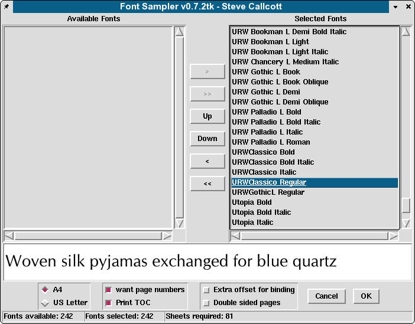
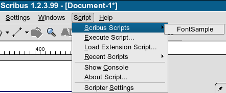
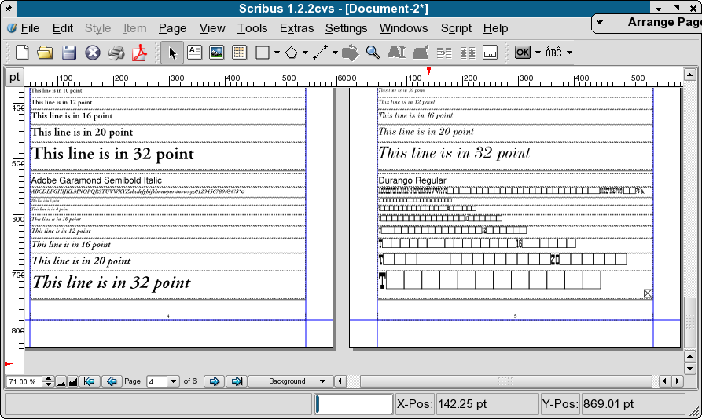

Included with Scribus is a wonderful and very powerful example of what the python scripter in Scribus can do. The font sampler script, written by Steve Callcott, is a tool to create a nicely laid out catalog of your existing font, which you can print and bind, as well as make a PDF for reference. It also happens to make it easy to spot broken fonts or fonts which are missing needed glyphs which might pose a problem when printing, especially high end or commercial printing.
|  |
Using this scripter module requires:
Running is easy enough:
|  |
Now, depending on the number of fonts, kinds of fonts and speed/memory of your machine, it might take a while for the script to run. Approximately, 700 plus fonts on a P4 might will take a few minutes, but also remember the script is not only scanning all your fonts, but also automagically adding pages and laying them out too. If memory is short or you have lots of fonts, in the order of 1000 plus, you might want to split the job in parts.
|  |
Note the output on the left and the right. The left side is a known high quality Type 1 font. The right side shows a freeware font from a bug report. Note, the lack of glyphs above, does not always indicate a broken font. Some specialty fonts like symbol fonts, dingbats and some non-Latin fonts may show the same results, but for a normal font, the results above are usually an indication of possible trouble.
When running the console, Scribus will indicate fonts which are dropped on loading and then again when used if specific glyphs are missing or broken. The same font might be listed several times as Scribus is using freetype to scan for available glyphs. This is a Good Thing ™ Bad fonts cause crashes in Scribus and other nastiness down the line when you export or print.